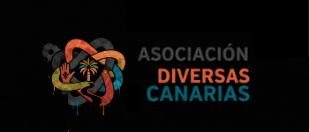
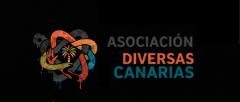
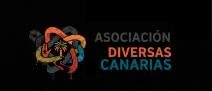
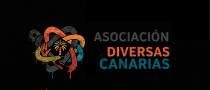
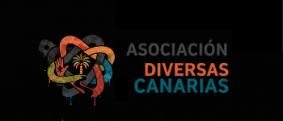

Inicio
Quiénes Somos
Prensa
Contacto
X

Estás acompañado. Hablemos de chemsex sin juicios.
쮻칍NDE EST츼S?
(Inicia aquí tu autoevaluación)
🆘 AYUDA URGENTE
(Sobredosis / Psicosis / Agresión)
INFO SUSTANCIAS
(Reducción de daños / Mezclas)
NECESITO HABLAR
(Conecta con @bajadasegura)
 


